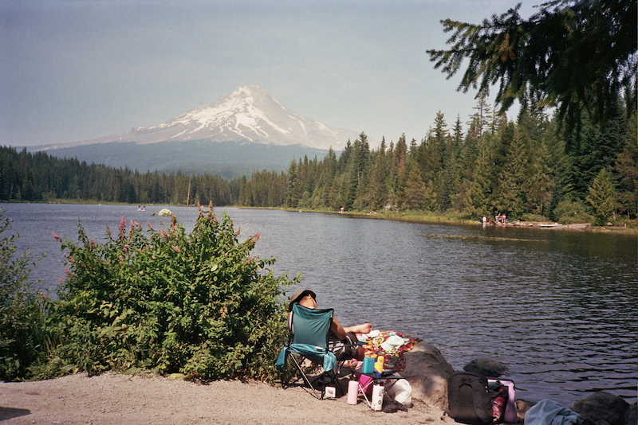

With everything being instant nowadays, I find it refreshing when something slows us down, especially when it comes to the art of photography. With film, you only have 36 photos to take. Instead of taking 10-15 photos of the same subject from different angles, film photography encourages us to slow down, prepare, and truly capture the moment.
There is also something so nostalgic about seeing the final results: the grain, the lighting, and the light flares. I genuinely get emotional every time I get a roll of film developed. There is something special about not knowing exactly how each photo will turn out until you finally get to see them.
